摘要：富接触操作需要力感知能力，但许多机械臂由于成本高昂而没有配备专用力传感器。我们提出神经外力矩估计（Neural External Torque Estimation，NEXT）：一种无需任何专用力传感器即可估计外部关节力矩的数据驱动方法。NEXT 仅用 10 分钟的自由运动数据、训练 1 分钟，就能达到与专用关节力矩传感器相当的估计质量。NEXT 使低成本机械臂具备力反馈遥操作能力，并通过力引导重采样训练（Force-Informed Re-Sampling Training，FIRST）提升策略学习——该方法在行为克隆过程中对接触前段与接触段样本进行上采样。在五个长时程任务上，FIRST 在任务进度上比此前的力感知策略高出 17% 以上。NEXT 与 FIRST 共同把力感知遥操作和力感知策略学习带到了无需额外传感硬件的现货机械臂上。视频与代码见 https://jasonjzliu.com/factr2 。
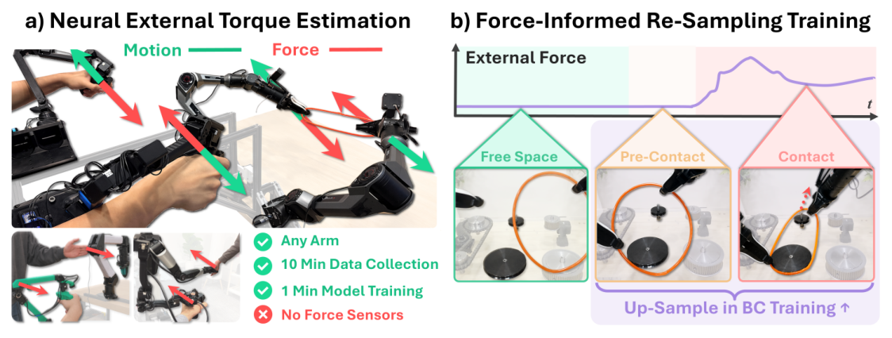
日常生活中的许多操作任务——插入、拧紧、可变形物体处理——都需要精确的力感知控制，而这种能力是人类天然依赖的。在机器人领域，这类细微的接触交互很难仅凭视觉可靠地推断出来，因此力感知是一项不可或缺的能力。专用力/力矩（force-torque，FT）传感器通常只出现在 Franka、Flexiv 或 KUKA 等昂贵平台上。许多低成本机械臂没有内置力感知，这既限制了它们在数据采集过程中提供力反馈的能力，也使策略无法利用实现鲁棒、接触感知操作所必需的力信息。为平台加装末端力传感器仍然困难且昂贵，有时甚至比机械臂本体还贵。
安装在机械臂与末端执行器之间的传统压阻式 FT 传感器依赖粘贴在精密加工结构上的多个应变片，因而既昂贵又笨重 [1, 2]。近期的电容式传感器（如 CoinFT [3]）和磁性触觉传感器（如 ReSkin [4]）提供了更低成本的替代方案，但其柔性敏感材料并非为承受末端执行器处常见的大力量级而设计 [5]。
作为替代，我们提出神经外力矩估计（Neural External Torque estimation，NEXT）——一种即使在低成本机械臂上也能给出高质量估计的数据驱动外部关节力矩估计方法。NEXT 只需要 10 分钟的无接触轨迹和 1 分钟训练，就能学到一个预测自由空间运动所需力矩的神经网络。在部署阶段，NEXT 把外部力矩估计为实测电机力矩（由电机电流推断）与预测自由空间力矩之间的残差。值得强调的是，NEXT 在数据采集和部署两个阶段都不需要专用力/力矩传感器。我们证明，NEXT 产生的信号与高端机械臂上专用关节力矩传感器的测量值高度吻合，同时优于已有的估计方法。
学到的外力信号带来两项能力：(1) 在无传感、低成本的机械臂（如 AgileX Piper、YAM）上实现力反馈遥操作，性能与有传感系统相当 [6, 7]；(2) 力引导重采样训练（Force Informed Re-Sampling Training，FIRST）——一种行为克隆方法，利用外力估计把示教分割为自由空间、接触前和接触三个阶段，并对后两个阶段上采样，以提高策略成功率。
FIRST 的动机来自一个观察：策略的失败并不集中在自由空间运动上，而是集中在需要精确对准的短暂接触前区间，以及需要受控交互与精细修正的接触阶段。我们在五个长时程、富接触任务上评估 FIRST，其成功率稳定优于此前的基线，在对准、恢复和接触阶段的表现上均有提升。
把 NEXT 与 FIRST 合在一起，我们把这一系统称为 FACTR 2。它把 FACTR [6] 从"具备专用力传感器的机械臂"推广到商品级机械臂，使力反馈遥操作与力感知策略学习同时成为可能。我们在从 Piper（2,500 美元）这类低成本机械臂到 Franka（30,000 美元）这类高端机械臂的平台上都验证了这一能力，因此我们相信 FACTR 2 让力感知对任何机械臂都变得可得。我们的贡献概括如下：
在没有专用传感器的情况下估计外力，通常的做法是对机器人动力学建模，并把预测信号与观测信号之间的残差解释为外部接触。基于解析建模与系统辨识的传统方法 [8, 9, 10] 可以是有效的，但需要大量人工工程投入，而且往往难以处理死区 [11]、力矩脉动 [12] 等执行器非线性。为克服这些局限，出现了基于学习的方法。有监督方法从成对的"本体感觉—真实世界"接触数据 [13] 或仿真数据 [14] 中学习，但需要专门的数据采集与标注。自编码器异常检测 [15] 之类的无监督方法可以识别偏离机械臂自由运动的情形，但主要适用于接触检测，而非连续力估计。逆动力学学习已被用于单个执行器 [12] 以及 da Vinci 系统 [16] 等复杂高端平台，但尚未在低成本机器人上得到广泛验证。
近期的模仿学习方法以几种不同方式引入力或力矩信息。一类工作把与力相关的信号作为策略的额外输入：例如 TA-VLA [17] 使用关节力（joint effort）信息，BiACT [8] 使用关节力矩，CompACT [18] 以末端力为条件，ForceVLA [19] 进一步引入混合专家（MoE）结构，在不同模态专家之间做上下文感知的路由。另一些方法（如 TA-VLA [17] 与 FoAR [20]）使用辅助目标来促使策略学到接触感知的表征。第二类工作把行为克隆与推理时的混合力—位控制或阻抗控制结合起来 [21, 22, 23]：这类方法同时预测运动目标与力目标，再由底层控制器跟踪，以强制执行期望的交互行为。最后，FACTR [6] 在训练阶段使用力信息，以改善策略对未见物体的泛化。我们的方法 FIRST 不仅把外部力矩作为策略输入，还用其推断接触阶段并据此重塑训练分布。我们的消融实验进一步表明，接触前的样本往往比接触中的样本更有价值，这为力感知的数据重加权给出了一个经验性的指导原则。
策略训练的动力学在很大程度上取决于优化过程中如何使用数据。在强化学习中，此前的工作用价值与优势加权来强调能带来更高回报的动作：AWR [24] 以指数化的优势对动作加权，CRR [25] 用学到的 critic 过滤或加权动作，AWAC [26] 用优势加权更新来衔接离线数据与在线微调。在模仿学习中，数据重加权也已被探索：Re-Mix 把 DoReMi 式 [27] 的 Group DRO 适配到机器人领域 [28]；DataMIL 用数据模型（datamodel）估计器 [29] 做目标感知的数据选择 [30]；DemInf 对状态—动作互信息打分，以偏好多样且可预测的动作 [31]；SCIZOR 结合进度预测与嵌入聚类来剪除转移样本 [32]。还有一类方法借助学到的价值函数做过滤：GVL 用视觉语言模型做价值估计 [33]，SARM 训练一个阶段感知的奖励模型 [34]。最后，基于 rollout 的方法直接优化闭环性能：Demo-SCORE 用基于 rollout 训练的成功分类器过滤数据 [35]，CUPID 用影响函数估计单条示教对期望回报的影响 [36]。
外部关节力矩 τext 是指由与环境物理交互所诱发的关节空间力矩，它不包括在自由空间中运动机器人所需的力矩。对于配备专用力/力矩传感的机械臂，该信号可直接获得，但许多机械臂并没有这类传感器。
在没有专用力感知的情况下，外部关节力矩可以由电机电流测量与机器人动力学模型来估计。多数机械臂都能直接提供电机电流，它通过 τm = KIm 近似地与电机力矩相关，其中 Im 是实测电机电流，K 是力矩常数。给定实测电机力矩 τm 与已知的机器人动力学模型，外部关节力矩可写为
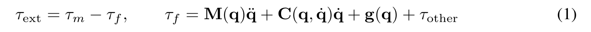
这里 τf 表示在自由空间（即无外部接触）中实现所观测运动所需的力矩。因此计算 τf 需要机器人质量矩阵 M、科氏力与离心力项 C、重力项 g 以及其他贡献项 τother 的准确模型。
然而，基于模型的外部力矩估计对 τf 的估计误差极为敏感。实践中，准确辨识机器人的惯性、重力与摩擦参数是困难的，尤其当只有电机侧测量可用时 [37, 38]。此外，残差 τm − τf 不仅包含接触诱发的力矩，还包含未建模的执行器与传动效应，例如非线性摩擦、静摩擦（stiction）、齿隙、迟滞、随温度变化的驱动行为、传感噪声、力矩脉动、死区与饱和 [39, 40, 41]。由于这些效应中许多依赖历史、且只能从瞬时关节状态中部分观测，自由空间建模误差会限制纯模型式的无传感器力估计。
我们提出 NEXT（Neural External Torque Estimation），一种估计外部关节力矩 τext 的数据驱动方法。需要强调的是，NEXT 在数据采集与部署阶段都不需要专用力/力矩传感器。我们没有用基于模型的逆动力学去计算自由空间力矩 τf，而是直接从关节状态学习一个自由空间逆动力学神经网络，用来预测在没有外部接触时将会观测到的电机力矩：
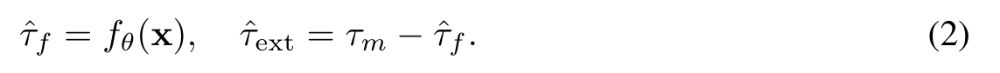
其中 fθ 是由 θ 参数化的神经网络，x 是本体感觉观测的历史序列。部署时，我们从实测电机力矩 τm = KIm 中减去预测的自由空间力矩 τ̂f，从而估计外部关节力矩 τ̂ext，如图 2 所示。第 7 节与附录 A.2 表明，NEXT 给出的外部力矩估计质量高于此前的方法。
为训练该自由空间逆动力学模型，我们采集一个在无外部接触条件下执行的机械臂轨迹数据集 Dfree = {(xi, τm,i)}Ni=1，其中 τm,i 是第 i 个时间步的实测电机力矩。输入 xi 由本体感觉量的时序历史构成：
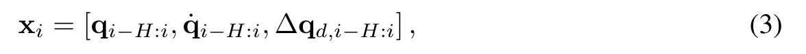
其中 H 是历史长度，q 表示关节位置，q̇ 表示关节速度，Δqd,i 是下发的关节位置目标 qd,i 与当前关节位置 qi 之差。
由于 Dfree 中的所有轨迹都是在无外部接触的情况下采集的，实测电机力矩就等于自由空间力矩。因此我们把 τm,i 作为学习 τf 的监督目标。实践中，该数据集可由约 10 分钟的自由空间机器人运动得到，这些运动既可以由遥操作产生，也可以由运动规划生成，或重放已知的自由空间轨迹。因此这一流程很容易迁移到新的机器人平台：它不需要力/力矩传感，不需要负载标定，也不需要人工系统辨识。
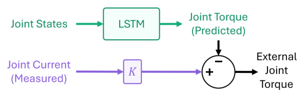
我们把 fθ 实例化为基于 LSTM 的序列模型，它把本体感觉历史 xi 映射为预测的自由空间力矩 τ̂f,i。使用时序历史可以让模型捕捉那些难以用瞬时刚体动力学模型表达的效果，例如迟滞、执行器动力学、摩擦记忆以及依赖控制器的跟踪行为。模型以 L2 回归损失训练：
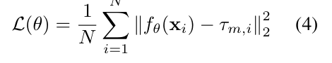
训练完成后，模型预测自由空间力矩 τ̂f，于是外部力矩可作为残差 τm − τ̂f 估计出来。训练非常轻量，在单张 NVIDIA RTX 3090 上仅需 1 分钟。模型结构与超参数的细节见附录 A。
为了利用外部关节力矩改进行为克隆，我们提出 FIRST（Force-Informed Re-Sampling Training）。FIRST 的动机来自一个观察：富接触任务中的失败往往发生在接触附近——接触前阶段需要精确对准，接触阶段则需要受控交互与精细的修正动作。因此 FIRST 重新调整训练数据混合比例，使接触前与接触片段被更频繁地采样，从而把学习集中到轨迹中最易失败的部分。在第 7 节我们将看到，与标准行为克隆相比，FIRST 把任务成功率提高了 17% 以上，并降低了接触前与接触阶段的验证损失，这解释了它的下游性能增益。
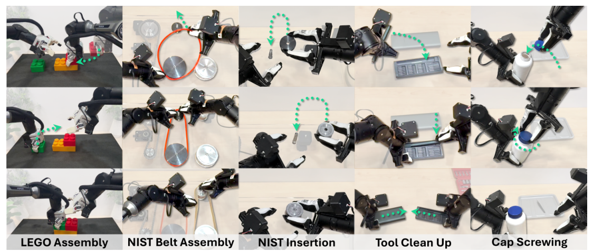
问题设定。我们考虑一个策略：在第 t 步，它以观测 ot = (I1:Mt, qt, τ̂ext,t) 为条件，其中包含 M 路相机图像、关节位置 qt 以及第 4 节得到的估计外部关节力矩 τ̂ext,t。策略预测一段未来的关节位置目标 ât:t+k ~ πθ(· | ot)，其中 at:t+k 表示对应的动作块（action chunk）。
我们在专家示教 D = {(ot, at:t+k)} 上以行为克隆方式训练策略。我们把 πθ 实例化为一个由条件速度场 vθ 参数化的流匹配（flow matching）策略。令 x1 = at:t+k 为专家动作块，x0 ~ N(0, I) 为噪声，xα = (1 − α)x0 + αx1，其中 α ~ U(0, 1)。策略以速度预测目标 [42] 训练，vθ 预测从噪声 x0 到专家动作块 x1 的流：
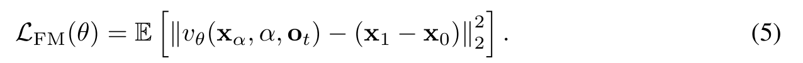
把轨迹切分为接触阶段。首先，FIRST 把示教数据集中的每个数据点标注为自由运动、接触前或接触三类。接触对应机器人正在与环境发生物理交互的时间步；接触前对应接触起始之前的一秒窗口；其余所有时间步都标为自由运动。
我们根据估计的外部关节力矩 τ̂ext,t，用标量接触分数 ft = ||τ̂ext,t||1 来判定接触。为避免噪声造成的频繁切换，我们采用带迟滞的阈值判定：二值接触指示 ct 在 ft ≥ Thigh 时置为 1，在 ft ≤ Tlow 时置为 0，其余情况保持先前的取值。接触起始发生的时间步，即标签 ct 由非接触切换到接触的时间步，构成
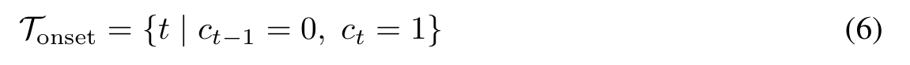
给定控制频率 F，我们按下式赋予阶段标签 st：把接触时间步标为 Contact，把每个接触起始之前的 F 个时间步标为 Pre-Contact，其余所有时间步标为 Free Space：
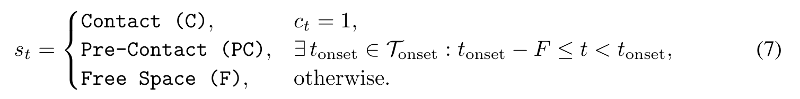
在训练中对接触前与接触阶段上采样。在为每个数据点赋予阶段标签 st ∈ {Free Space, Pre-Contact, Contact} 之后，FIRST 只修改用于构造 batch 的采样分布。我们为自由空间、接触前与接触数据点分别赋予与阶段相关的采样权重 wF、wPC、wC，且 wPC, wC > wF。训练时，数据点按概率 pt = w(st) / ∑Nj=1 w(sj) 被采样，其中 w(st) 表示数据点 t 所属阶段标签对应的权重。这种加权随机采样提高了每个 minibatch 中接触前与接触样本的比例，从而强调那些精确对准与力敏感修正最为关键的轨迹片段。
我们在 Franka 机械臂上分别于接触与自由空间两种设置下评估外部力矩估计。选择 Franka 是因为它内置关节力矩传感器，并给出经出厂标定的外部力矩估计，这为我们提供了一个高质量参考，并在接触场景下用作真值。接触场景下，我们采集 5 分钟留出数据（训练时未见），期间由人向机器人施加外力，并报告真值传感器信号与 NEXT（本文方法）、FILIC [22] 以及扰动观测器（disturbance observer，DO）[43] 的估计之间跨关节平均的 L1 误差。自由空间场景下，真实外部力矩应为零，我们采集 5 分钟无接触的留出数据，以零力矩为真值，并把 Franka 的传感器信号也作为一种基线。基线细节见附录 A.4。我们在 AgileX Piper（一种无力传感器的低成本机械臂）上重复自由空间评估，同样以零力矩为真值。由于 Piper 不具备外部力矩传感，我们无法在它上面重复接触评估，转而通过力反馈遥操作的用户研究来评估其接触表现。
力反馈遥操作用户研究。我们评估学到的外部力矩估计是否能提供有用的遥操作反馈。在一项有 20 名参与者参加的用户研究中，用户在图 4 所示的 Franka 机械臂上执行擦拭任务，共有 5 种反馈条件：无反馈、基于扰动观测器的反馈（DO）、主从位置—位置反馈 [44]（PP）、使用 Franka 内置力矩传感器的 FACTR Teleop，以及使用 NEXT 外部力矩估计的 FACTR Teleop。
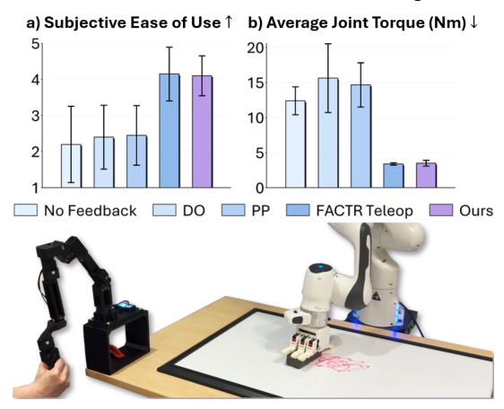
需要注意，两种 FACTR Teleop 变体都实现如下的力反馈控制律 [6]：
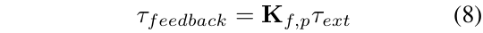
其中 τfeedback 是施加到主臂上的关节力矩，Kf,p 是对从臂感知到的外部关节力矩 τext 的缩放系数。在本研究中，τext 或来自 Franka 出厂的外部力矩估计，或来自 NEXT。我们收集 1–5 分的易用性评分，并测量所施加的关节力矩。我们在 Piper 机械臂上重复了该研究。基线细节见附录 A.5。
实验设置。我们在五个长时程、富接触的操作任务上把 FIRST 与各基线对比，任务如图 3 所示，详细的任务描述见附录 C.1。对每个任务，我们在双臂 Piper 平台上采集 250 条示教，使用四路 RGB 相机：两路腕部相机与两路俯视相机。每个策略在每个任务上评估 20 次 rollout。我们报告任务进度，评分标准见附录 C.2。
策略细节与基线。在保持策略结构与行为克隆目标不变的前提下，我们把 FIRST 与四个基线比较。所有方法都使用训练 20 个 epoch 的流匹配策略，结构改编自多模态扩散 Transformer [45]，动作块大小为 30。我们还用动作分块 Transformer（Action Chunking Transformer，ACT）[46] 重复了实验。每个策略的动作头都随机初始化并从头训练。两者的实现细节见附录 B。比较的变体如下：
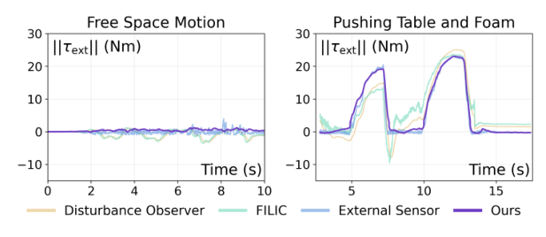
表 1：Franka 在自由空间与接触设置下跨关节平均的 L1 力矩误差。自由空间误差以零外部力矩为基准，接触误差以 Franka 内置的外部力矩估计为基准。NEXT 在两种设置下都取得最低误差。
| 运动类型 | 外力矩方法 | L1 误差 (N·m) |
|---|---|---|
| 接触 | 外力传感器（真值） | 0.000 ± 0.000 |
| FILIC [22] | 4.395 ± 1.531 | |
| 扰动观测器 [43] | 1.471 ± 0.761 | |
| NEXT（本文） | 0.547 ± 0.348 | |
| 自由空间 | 自由空间（真值） | 0.000 ± 0.000 |
| FILIC [22] | 2.460 ± 1.358 | |
| 扰动观测器 [43] | 2.429 ± 1.298 | |
| 外力传感器 | 0.449 ± 0.208 | |
| NEXT（本文） | 0.414 ± 0.278 |
在外力估计实验中，我们要回答：(i) NEXT 的外部关节力矩估计与真值传感器测量、与各基线相比如何？(ii) 与其它反馈方式相比，NEXT 用于力反馈遥操作的效果如何？
在模仿学习实验中，我们要回答：(i) FIRST 与其它利用力的基线的比较如何？(ii) 为了让性能最好，FIRST 应该对哪些接触阶段上采样？
NEXT 预测的外部关节力矩可与专用传感器相比。表 1 给出了 NEXT 在 Franka 系统上的定量结果。在外部接触下，NEXT 与 Franka 的外部关节力矩传感器高度吻合，平均 L1 误差仅 0.547 N·m，比 FILIC 低 87.6%，比扰动观测器低 62.8%。图 5 右侧也从定性上显示了这一趋势：NEXT 紧贴传感器信号，而各基线偏差明显，尤其在接触切换时。
在自由空间中，真实外部力矩应为零，我们把 Franka 的外部力矩传感器信号作为一种额外基线；NEXT 取得最低误差，甚至优于这一专用传感器。如图 5 左侧所示，它的估计噪声更小，也更贴近零。这可以归因于 NEXT 直接从该硬件上采集的数据中学习硬件特有的效应，从而给出高质量的力估计。
我们在 AgileX Piper 机械臂上观察到类似结果：NEXT 的平均关节 L1 误差仅 0.018 N·m，显著低于各基线；完整结果见附录 A.6 的表 5。我们还在附录 A.2 中对 NEXT 的模型结构做了消融，表明 LSTM 优于 GRU 与 MLP 变体。
NEXT 使低成本机械臂具备高质量的力反馈遥操作能力。在 Franka 用户研究中，参与者认为基于 NEXT 的力反馈比各基线更易使用，见图 4(a)。NEXT 还降低了完成任务所需的用力，表现与使用专用关节力矩传感器的 FACTR Teleop 相当，见图 4(b)。施加的力越小，说明力感知越好、无用发力越少。在缺乏专用力传感器的 Piper 机械臂上，NEXT 同样优于各基线，详见附录 A.6。总体而言，这些结果表明 NEXT 无需力传感器即可提供高质量的力反馈，与基于传感器的方法相当。
FIRST 提升了策略性能。图 6 给出了流匹配策略下 FIRST 与各基线的主要定性结果，ACT 的结果见附录 D.2。FIRST 在全部五个真实任务上都取得最高的任务进度。这一提升在长时程、多阶段的任务上尤为明显，例如 NIST Belt——成功执行需要自由运动、接触前对准与富接触操作之间可靠的切换。从定性上看，我们观察到 FIRST 在关键接触事件之前产生了更稳健的恢复行为，例如在插入、缠绕或拧紧之前做出细粒度的重新对准动作。
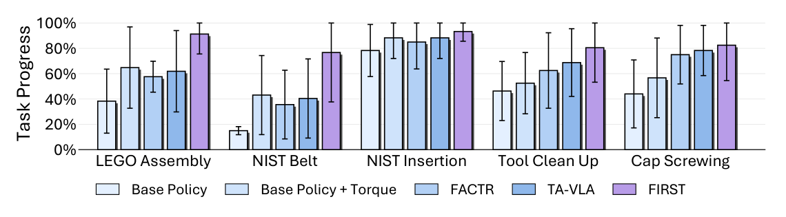
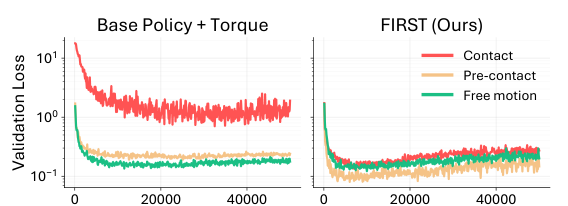
图 7 进一步通过 NIST Belt 任务的分阶段验证损失解释了这一改进。对 Base Policy + Torque 基线而言，接触前与接触样本上的损失高于自由运动样本，说明这些阶段更难建模。通过对接触前与接触数据上采样，FIRST 降低了它们的验证损失，使之更接近自由运动的损失，从而把训练集中到富接触操作中最关键的阶段。
FIRST 的上采样消融。我们消融了应对哪些阶段上采样才能获得最佳策略性能。如表 2 所示，对接触前样本上采样取得最高的平均任务进度，说明接触之前的时刻尤其重要，因为它们决定了能否到达正确的位姿与对准。同时对接触前与接触阶段上采样也很有竞争力，并在 Cap Screwing 上表现最好——该任务中持续的接触至关重要。相比之下，只对接触样本上采样并不能改善性能。总体而言，这些结果表明强调与接触相关的阶段（尤其是接触前）可以改善长时程操作。各任务最高性能上采样比例的额外结果见附录 D.4。
表 2：上采样消融。C：接触（contact），PC：接触前（pre-contact），PC+C：接触前 + 接触。
| 任务 | C | PC | PC+C |
|---|---|---|---|
| LEGO 装配 | 0.697 | 0.913 | 0.875 |
| NIST 皮带 | 0.494 | 0.767 | 0.649 |
| NIST 插入 | 0.800 | 0.933 | 0.933 |
| 工具清理 | 0.650 | 0.805 | 0.775 |
| 瓶盖拧紧 | 0.707 | 0.673 | 0.825 |
| 平均 | 0.670 | 0.818 | 0.811 |
为什么不直接把原始关节电流作为输入？由于低成本机械臂通常能提供电机电流，我们比较了以原始电流为条件的策略与以 NEXT 估计的外部力矩为条件的策略。如表 10 所示，原始电流改善了 NIST 插入但未改善瓶盖拧紧，而 NEXT 估计的外部力矩在两个任务上都最好。这说明减去学到的自由空间动力学可以得到比原始电流更干净的接触表征，进一步凸显了 NEXT 的用处。完整结果与注意力分析见附录 D.6。
我们提出 NEXT——一种无需专用力传感器即可估计外部关节力矩的数据驱动方法。仅用 10 分钟自由空间数据和 1 分钟训练，NEXT 就能给出与专用传感器测量相当的估计，并使低成本机械臂具备力反馈遥操作能力。我们进一步提出 FIRST，它利用 NEXT 的力矩估计在行为克隆中对接触前与接触片段上采样，通过强调对准与交互最关键的阶段来提升富接触任务上的性能。
NEXT 有两个主要局限。第一，其绝对力矩尺度依赖于电机力矩常数 K，该常数通常由厂商提供或由电流—力矩曲线得到。若 K 不准确，绝对尺度需要借助外部力传感器标定。实践中，这对力反馈遥操作的限制较小（力通常会被缩放到舒适范围 [6]），对策略学习也影响有限（输入本来就会被归一化）。第二，NEXT 是机器人特定的，可能因硬件差异而需要在不同机械臂之间重新训练。
作者感谢 Andrew Wang、Yulong Li、Koki Yamane、Yangcen Liu、Yongliang Wang、Ritvik Singh、Zheyuan Hu、Adam Kan 与 Arthur Allshire 对本文的有益讨论与反馈，也感谢 Zheyuan Hu 与 AIRe Lab 成员慷慨提供 YAM 机械臂用于本项目。本工作部分受 AFOSR FA9550-23-1-0747、ONR MURI N00014-22-1-2773 与 ONR MURI N00014-24-1-2748 资助。
[1] ATI Industrial Automation. Gamma Force/Torque sensor. https://www.ati-ia.com/products/ft/ft_models.aspx?id=gamma, 2026. Accessed: April 28, 2026.
[2] Bota Systems. 6-Axis Force Torque Sensors for Robotics. https://www.botasys.com/force-torque-sensors, 2024. Accessed: April 28, 2026.
[3] H. Choi, J. E. Low, T. M. Huh, S. Hong, G. A. Uribe, K. A. Hoffmann, J. Di, T. G. Chen, A. A. Stanley, and M. R. Cutkosky. Coinft: A coin-sized, capacitive 6-axis force torque sensor for robotic applications. arXiv preprint arXiv:2503.19225, 2025.
[4] R. Bhirangi, T. Hellebrekers, C. Majidi, and A. Gupta. Reskin: versatile, replaceable, lasting tactile skins. In CoRL, 2021.
[5] M. Y. Cao, S. Laws, and F. R. y Baena. Six-axis force/torque sensors for robotics applications: A review. IEEE Sensors Journal, 21(24):27238–27251, 2021.
[6] J. J. Liu, Y. Li, K. Shaw, T. Tao, R. Salakhutdinov, and D. Pathak. FACTR: Force-Attending Curriculum Training for Contact-Rich Policy Learning. In Proceedings of Robotics: Science and Systems, Los Angeles, CA, USA, June 2025. doi:10.15607/RSS.2025.XXI.079.
[7] S. Oh, T. Takahashi, C. C. Beltran-Hernandez, Y. Kuroda, and M. Hamaya. A soft wrist with anisotropic and selectable stiffness for robust robot learning in contact-rich manipulation, 2026. URL https://arxiv.org/abs/2602.14434.
[8] T. Buamanee, M. Kobayashi, Y. Uranishi, and H. Takemura. Bi-act: Bilateral control-based imitation learning via action chunking with transformer. In 2024 IEEE International Conference on Advanced Intelligent Mechatronics (AIM), pages 410–415, 2024. doi:10.1109/AIM55361.2024.10637173.
[9] K. Yamane, Y. Li, M. Konosu, K. Inami, J. Oaki, T. Tsuji, and S. Sakaino. Design and experimental validation of sensorless 4-channel bilateral teleoperation for low-cost manipulators, 2026. URL https://arxiv.org/abs/2507.06174.
[10] H. Shi, S. Hu, Y. Hou, W. Wang, K. Liu, and S. Song. Minimalist compliance control, 2026. URL https://arxiv.org/abs/2603.00913.
[11] K. Inami, K. Yamane, and S. Sakaino. Loss function considering dead zone for neural networks, 2024. URL https://arxiv.org/abs/2402.00393.
[12] A. Zhu, Y. Tanaka, F. Rafeedi, and D. Hong. Cycloidal quasi-direct drive actuator designs with learning-based torque estimation for legged robotics. In 2025 IEEE International Conference on Robotics and Automation (ICRA), pages 1–8. IEEE, 2025.
[13] K. M. Park, J. Kim, J. Park, and F. C. Park. Learning-based real-time detection of robot collisions without joint torque sensors. IEEE Robotics and Automation Letters, 6(1):103–110, 2021. doi:10.1109/LRA.2020.3033269.
[14] J. Liang and O. Kroemer. Contact localization for robot arms in motion without torque sensing. In 2021 IEEE International Conference on Robotics and Automation (ICRA), pages 6322–6328. IEEE, 2021.
[15] K. M. Park, Y. Park, S. Yoon, and F. C. Park. Collision detection for robot manipulators using unsupervised anomaly detection algorithms. IEEE/ASME Transactions on Mechatronics, 27(5):2841–2851, 2022. doi:10.1109/TMECH.2021.3119057.
[16] N. Yilmaz, J. Y. Wu, P. Kazanzides, and U. Tumerdem. Neural network based inverse dynamics identification and external force estimation on the da vinci research kit. In 2020 IEEE International Conference on Robotics and Automation (ICRA), pages 1387–1393. IEEE, 2020.
[17] Z. Zhang, H. Xu, Z. Yang, C. Yue, Z. Lin, H.-a. Gao, Z. Wang, and H. Zhao. Elucidating the design space of torque-aware vision-language-action models. In J. Lim, S. Song, and H.-W. Park, editors, Proceedings of The 9th Conference on Robot Learning, volume 305 of Proceedings of Machine Learning Research, pages 4019–4037. PMLR, 27–30 Sep 2025. URL https://proceedings.mlr.press/v305/zhang25k.html.
[18] T. Kamijo, C. C. Beltran-Hernandez, and M. Hamaya. Learning variable compliance control from a few demonstrations for bimanual robot with haptic feedback teleoperation system. In IEEE/RSJ International Conference on Intelligent Robots and Systems (IROS), 2024.
[19] J. Yu, H. Liu, Q. Yu, J. Ren, C. Hao, H. Ding, G. Huang, G. Huang, Y. Song, P. Cai, W. Zhang, and C. Lu. ForceVLA: Enhancing VLA models with a force-aware moe for contact-rich manipulation. In The Thirty-ninth Annual Conference on Neural Information Processing Systems, 2026. URL https://openreview.net/forum?id=2845H8Ua5D.
[20] Z. He, H. Fang, J. Chen, H.-S. Fang, and C. Lu. Foar: Force-aware reactive policy for contact-rich robotic manipulation. IEEE Robotics and Automation Letters, 10(6):5625–5632, 2025. doi:10.1109/LRA.2025.3560871.
[21] W. Liu, J. Wang, Y. Wang, W. Wang, and C. Lu. Forcemimic: Force-centric imitation learning with force-motion capture system for contact-rich manipulation. In 2025 IEEE International Conference on Robotics and Automation (ICRA), 2025.
[22] H. Ge, Y. Jia, Z. Li, Y. Li, Z. Chen, R. Huang, and G. Zhou. Filic: Dual-loop force-guided imitation learning with impedance torque control for contact-rich manipulation tasks, 2025. URL https://arxiv.org/abs/2509.17053.
[23] H. Xue, J. Ren, W. Chen, G. Zhang, Y. Fang, G. Gu, H. Xu, and C. Lu. Reactive diffusion policy: Slow-fast visual-tactile policy learning for contact-rich manipulation. In Proceedings of Robotics: Science and Systems (RSS), 2025.
[24] X. B. Peng, A. Kumar, G. Zhang, and S. Levine. Advantage-weighted regression: Simple and scalable off-policy reinforcement learning. arXiv preprint arXiv:1910.00177, 2019.
[25] Z. Wang, A. Novikov, K. Zolna, J. T. Springenberg, S. Reed, B. Shahriari, N. Siegel, J. Merel, C. Gulcehre, N. Heess, and N. de Freitas. Critic regularized regression. Advances in Neural Information Processing Systems, 33:7768–7778, 2020.
[26] A. Nair, A. Gupta, M. Dalal, and S. Levine. Awac: Accelerating online reinforcement learning with offline datasets. arXiv preprint arXiv:2006.09359, 2020.
[27] S. M. Xie, H. Pham, X. Dong, N. Du, H. Liu, Y. Lu, P. S. Liang, Q. V. Le, T. Ma, and A. W. Yu. Doremi: Optimizing data mixtures speeds up language model pretraining. Advances in Neural Information Processing Systems, 36:69798–69818, 2023.
[28] J. Hejna, C. A. Bhateja, Y. Jiang, K. Pertsch, and D. Sadigh. Remix: Optimizing data mixtures for large scale imitation learning. In P. Agrawal, O. Kroemer, and W. Burgard, editors, Proceedings of The 8th Conference on Robot Learning, volume 270 of Proceedings of Machine Learning Research, pages 145–164. PMLR, 06–09 Nov 2025. URL https://proceedings.mlr.press/v270/hejna25a.html.
[29] A. Ilyas, S. M. Park, L. Engstrom, G. Leclerc, and A. Madry. Datamodels: Understanding predictions with data and data with predictions. In ICML, 2022.
[30] S. Dass, A. Khaddaj, L. Engstrom, A. Madry, A. Ilyas, and R. Martín-Martín. DataMIL: Selecting data for robot imitation learning with datamodels. In The Fourteenth International Conference on Learning Representations, 2026. URL https://openreview.net/forum?id=AcTsKglDdh.
[31] J. Hejna, S. Mirchandani, A. Balakrishna, A. Xie, A. Wahid, J. Tompson, P. Sanketi, D. Shah, C. Devin, and D. Sadigh. Robot data curation with mutual information estimators. In Robotics: Science and Systems (RSS), 2025.
[32] Y. Zhang, Y. Xie, H. Liu, R. Shah, M. Wan, L. Fan, and Y. Zhu. Scizor: Self-supervised data curation for large-scale imitation learning. In IEEE International Conference on Robotics and Automation (ICRA), 2026.
[33] Y. J. Ma, J. Hejna, C. Fu, D. Shah, J. Liang, Z. Xu, S. Kirmani, P. Xu, D. Driess, T. Xiao, et al. Vision language models are in-context value learners. In The Thirteenth International Conference on Learning Representations, 2024.
[34] Q. Chen, J. Yu, M. Schwager, P. Abbeel, F. Shentu, and P. Wu. SARM: Stage-aware reward modeling for long horizon robot manipulation. In The Fourteenth International Conference on Learning Representations, 2026. URL https://openreview.net/forum?id=aemqAxScl9.
[35] A. S. Chen, A. M. Lessing, Y. Liu, and C. Finn. Curating demonstrations using online experience. In Proceedings of Robotics: Science and Systems, 2025. doi:10.15607/RSS.2025.XXI.071.
[36] C. Agia, R. Sinha, J. Yang, R. Antonova, M. Pavone, H. Nishimura, M. Itkina, and J. Bohg. Cupid: Curating data your robot loves with influence functions. In J. Lim, S. Song, and H.-W. Park, editors, Proceedings of The 9th Conference on Robot Learning, volume 305 of Proceedings of Machine Learning Research, pages 2907–2932. PMLR, 27–30 Sep 2025. URL https://proceedings.mlr.press/v305/agia25a.html.
[37] A. Jubien, M. Gautier, and A. Janot. Dynamic identification of the kuka lwr robot using motor torques and joint torque sensors data. In 19th IFAC World Congress, 2014.
[38] S. Haddadin, A. De Luca, and A. Albu-Schäffer. Robot collisions: A survey on detection, isolation, and identification. IEEE Transactions on Robotics, 33(6):1292–1312, 2017.
[39] M. Linderoth, A. Stolt, A. Robertsson, and R. Johansson. Robotic force estimation using motor torques and modeling of low velocity friction disturbances. In 2013 IEEE/RSJ International Conference on Intelligent Robots and Systems, pages 3550–3556, 2013.
[40] N. M. Kircanski and A. A. Goldenberg. An experimental study of nonlinear stiffness, hysteresis, and friction effects in robot joints with harmonic drives and torque sensors. The International Journal of Robotics Research, 16(2):214–239, 1997.
[41] M. Reuss, N. van Duijkeren, R. Krug, P. Becker, V. Shaj, and G. Neumann. End-to-end learning of hybrid inverse dynamics models for precise and compliant impedance control. In Robotics: Science and Systems, 2022.
[42] X. Liu, C. Gong, and Q. Liu. Flow straight and fast: Learning to generate and transfer data with rectified flow. In The Eleventh International Conference on Learning Representations, 2023. URL https://openreview.net/forum?id=XVjTT1nw5z.
[43] S. Mamedov and S. Mikhel. Practical aspects of model-based collision detection. Frontiers in Robotics and AI, 7:571574, 2020.
[44] P. F. Hokayem and M. W. Spong. Bilateral teleoperation: An historical survey. Automatica, 42(12):2035–2057, 2006. ISSN 0005-1098. doi:https://doi.org/10.1016/j.automatica.2006.06.027.
[45] M. Reuss, Ö. E. Yağmurlu, F. Wenzel, and R. Lioutikov. Multimodal diffusion transformer: Learning versatile behavior from multimodal goals. In Proceedings of Robotics: Science and Systems, Delft, Netherlands, July 2024. doi:10.15607/RSS.2024.XX.121.
[46] T. Z. Zhao, V. Kumar, S. Levine, and C. Finn. Learning Fine-Grained Bimanual Manipulation with Low-Cost Hardware. In Proceedings of Robotics: Science and Systems, Daegu, Republic of Korea, July 2023. doi:10.15607/RSS.2023.XIX.016.
[47] C. Gaz, M. Cognetti, A. Oliva, P. Robuffo Giordano, and A. De Luca. Dynamic identification of the franka emika panda robot with retrieval of feasible parameters using penalty-based optimization. IEEE Robotics and Automation Letters, 4(4):4147–4154, 2019. doi:10.1109/LRA.2019.2931248.
[48] AgileX Robotics. agx arm urdf: Agilex robot arm urdf models. https://github.com/agilexrobotics/agx_arm_urdf, 2026. Accessed: 2026-05-11.
[49] P. Wu, Y. Shentu, Z. Yi, X. Lin, and P. Abbeel. GELLO: A general, low-cost, and intuitive teleoperation framework for robot manipulators. In 2024 IEEE/RSJ International Conference on Intelligent Robots and Systems (IROS), pages 12156–12163. IEEE, 2024. doi:10.1109/IROS58592.2024.10801581.
[50] O. Siméoni, H. V. Vo, M. Seitzer, F. Baldassarre, M. Oquab, C. Jose, V. Khalidov, M. Szafraniec, S. Yi, M. Ramamonjisoa, et al. Dinov3. arXiv preprint arXiv:2508.10104, 2025.
[51] K. Shaw and D. Pathak. Leap hand v2: Dexterous, low-cost anthropomorphic hybrid rigid soft hand for robot learning. In 2nd Workshop on Dexterous Manipulation: Design, Perception and Control (RSS).
我们使用基于 LSTM 的序列模型做自由空间逆动力学预测。我们没有在整条轨迹上维护持久的隐状态，而是采用无状态的滑动窗口形式：网络因此隐式地对回看窗口内的时间动力学建模，而隐状态对每个序列都重置。这种形式既提供了近期运动上下文，又不会在长轨迹上累积隐状态漂移。局部历史让模型能够捕捉速度相关、执行器相关以及未建模的摩擦效应，而无需显式估计加速度。部署时，估计器可用最近 N 个观测组成的滚动缓冲区来运行。随后，外部关节力矩由实测关节力矩与预测自由空间力矩之间的残差给出。网络结构与训练超参数列于表 3。
在 Intel Core i9-10920X CPU 的单线程上，该自由空间逆动力学模型每次前向约需 1.76 ms，对应约 568 Hz 的有效更新率，这使高频率的力反馈遥操作成为可能。实践中我们以 100 Hz 运行该模型。
表 3：NEXT 所用自由空间逆动力学神经网络的网络结构与训练超参数。
| 超参数 | 取值 |
|---|---|
| 循环骨干 | 2 层 LSTM，隐藏维度 128 |
| 预测头 | 2 层 MLP，隐藏维度 256 |
| Dropout | 0.1 |
| 损失函数 | 均方误差（MSE） |
| 优化器 | AdamW |
| 基础学习率 | 1 × 10−3 |
| 权重衰减 | 1 × 10−6 |
| 梯度裁剪 | 1.0 |
| 早停 | 开启；依据验证损失，patience 20，warmup 10，最小 Δ = 10−5 |
| 硬件 | NVIDIA RTX 3090, 24 GB |
| 训练时间 | 含早停约 1 分钟 |
| 数据频率 | 100 Hz |
为了选定 NEXT 所采用的自由空间逆动力学模型，我们在自由空间与接触两种设置下，以外部力矩估计误差为指标，对模型结构、输入模态与历史长度做消融。此前的工作在专用 da Vinci 系统上使用 MLP 做力矩估计 [16]，在单执行器外部力矩估计中使用 GRU [12]。因此我们比较 MLP、GRU 与 LSTM 三种结构。
表 4 报告了结构消融结果，数值为留出集上预测自由空间力矩与真值自由空间力矩之间跨关节平均的 L1 验证误差。MLP 不如循环模型，说明时序历史对自由空间力矩估计很重要。GRU 在自由空间表现良好，但在接触时变差。LSTM 在自由空间与接触两方面都取得最佳性能，因为更长时程的执行器、摩擦与控制相关效应可能起更大作用。
我们进一步消融输入模态与历史长度。具体地，我们比较关节位置 q、关节位置与速度 (q, q̇)，以及关节位置、速度与跟踪误差 (q, q̇, Δqd) 三种输入，历史长度取 10、25、50 步。使用 (q, q̇, Δqd) 始终优于其它输入，说明跟踪误差提供了关于控制器出力与执行器响应的有用信息。10 步的短历史通常误差更高，而把历史增加到 50 步可改善性能，对 LSTM 尤为明显。基于这些结果，我们最终选用历史长度 H = 50、输入为 (q, q̇, Δqd) 的 LSTM 作为 NEXT 的自由空间逆动力学模型。
表 4：外部力矩估计在模型族、输入模态与时间历史长度上的消融。数值为留出集上预测自由空间力矩与真值自由空间力矩之间跨关节平均的 L1 验证误差，单位为 N·m。
| 输入 | H | MLP | GRU | LSTM（本文） | |||
|---|---|---|---|---|---|---|---|
| 自由运动 ↓ | 接触 ↓ | 自由运动 ↓ | 接触 ↓ | 自由运动 ↓ | 接触 ↓ | ||
| q | 10 | 2.35±2.34 | 1.78±1.64 | 2.25±1.79 | 1.12±1.09 | 2.53±2.52 | 2.61±2.29 |
| 25 | 2.02±2.01 | 1.34±1.32 | 1.68±1.30 | 0.665±0.478 | 2.21±2.20 | 1.45±1.39 | |
| 50 | 1.76±1.76 | 1.13±1.06 | 1.62±1.24 | 0.843±0.835 | 2.15±2.15 | 1.09±0.908 | |
| q, q̇ | 10 | 1.04±1.03 | 0.681±0.647 | 0.863±0.862 | 0.580±0.535 | 1.15±1.15 | 0.715±0.553 |
| 25 | 0.980±0.976 | 0.908±0.802 | 0.814±0.814 | 0.596±0.506 | 1.11±1.11 | 0.551±0.511 | |
| 50 | 1.02±1.02 | 0.905±0.892 | 0.795±0.794 | 0.653±0.549 | 1.12±1.12 | 0.578±0.526 | |
| q, q̇, Δqd | 10 | 0.706±0.702 | 1.89±1.71 | 0.423±0.422 | 1.94±1.75 | 0.504±0.503 | 0.876±0.244 |
| 25 | 0.755±0.747 | 1.56±1.45 | 0.473±0.472 | 1.47±1.29 | 0.490±0.489 | 0.789±0.453 | |
| 50 | 0.813±0.811 | 1.47±1.33 | 0.429±0.429 | 1.62±1.45 | 0.414±0.278 | 0.547±0.348 | |
图 8 展示了为训练 NEXT 的自由空间逆动力学 LSTM，在 Piper 机械臂上采集的 10 分钟自由运动数据集的分布。采集过程中我们遵循一个简单的、面向覆盖率的流程：首先让每个关节在其运动范围内单独运动；接着让末端执行器做涉及多个关节的类笛卡尔运动；最后重复慢速与快速运动，以捕捉速度相关的动力学。虽然这些轨迹可以通过运动规划自动生成，但实践中也可以一次录制、然后在新的机器人装置上重放，从而快速采集训练数据。
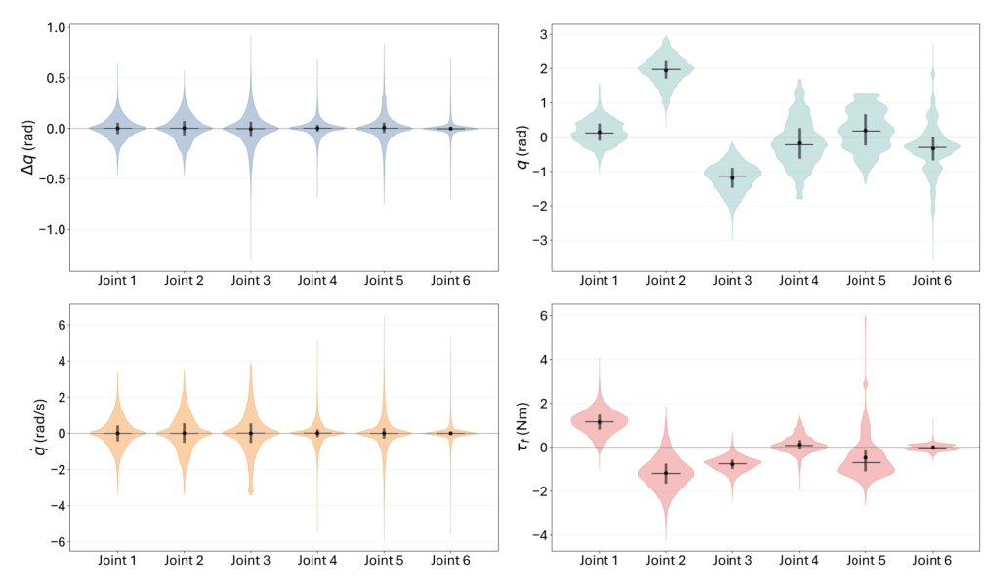
我们为 NEXT 实现了两个基于模型的外部关节力矩估计基线：FILIC [22] 与扰动观测器 [43]。两者均在 Franka Panda 与 AgileX Piper 机械臂上评估。对 Franka，我们使用 [47] 的动力学模型，其参数由基于优化的系统辨识得到；对 AgileX Piper，我们使用厂商提供的 URDF [48] 导出的动力学模型。
FILIC [22]。对 FILIC，我们使用第 3 节给出的标准残差式估计。给定实测电机力矩 τm，外部力矩由减去用 MuJoCo 逆动力学计算的标称自由空间力矩得到：
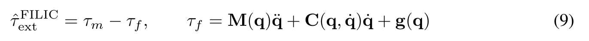
该方法把实测电机力矩与建模自由空间动力学之间的残差直接归因于外部交互。
扰动观测器 [43]。作为第二个基线，我们实现一个基于动量的扰动观测器。它不直接计算依赖加速度的逆动力学，而是从广义动量的残差中估计外部力矩：
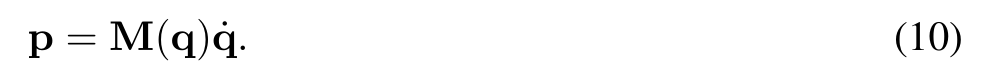
它维护一个内部动量估计 p̂，其动力学为
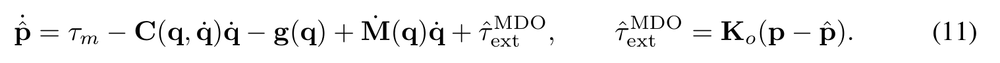
由于避免了直接计算 q̈，动量观测器对编码器噪声不那么敏感，估计也比 FILIC 更平滑。如图 5 所示，它比 FILIC 噪声更小，但精度仍不如 NEXT。
在力反馈遥操作的用户研究中，我们在 Franka Panda 上实现五种反馈条件：
我们在 AgileX Piper 机械臂上重复了同样的研究，但排除了 FACTR Teleop，因为 Piper 不提供专用关节力矩传感。
由于 AgileX Piper 不提供专用外部关节力矩传感，我们只在自由空间设置下评估力矩估计，此处真值外部力矩已知为零。如表 5 所示，NEXT 取得最低误差，平均 L1 误差仅 0.018 N·m，优于 FILIC 与扰动观测器。这些结果表明，即使在没有专用力传感器的低成本机械臂上，NEXT 也能给出准确的外部力矩估计。
为在接触场景下评估 NEXT，我们开展力反馈遥操作用户研究。如图 9 所示，参与者认为基于 NEXT 力反馈的遥操作比各基线反馈方式更易使用。
表 5：AgileX Piper 在自由空间设置下跨关节平均的 L1 力矩误差。自由空间误差以零外部力矩为基准。NEXT 取得最低误差。
| 外力矩方法 | 误差 (N·m) ↓ |
|---|---|
| 自由运动（真值） | 0.000 ± 0.000 |
| FILIC | 0.435 ± 0.225 |
| 扰动观测器 | 0.248 ± 0.132 |
| 本文 | 0.018 ± 0.012 |
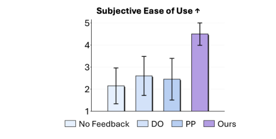
我们的行为克隆策略以 RGB 图像、本体感觉输入与力估计为输入。每种模态先被 token 化，再送入 ACT 或流匹配 DiT 策略结构。图像用 DINOv3-Base 编码器 [50] 编码，本体感觉与力输入则通过 MLP 层投影为 token。
本体感觉输入包括关节位置与夹爪开度，力输入对应估计的外部关节力矩。我们只使用当前时间步最近的一次观测。动作空间由绝对关节角与夹爪开度组成，动作预测时域为 30。需要说明的是，每个策略的动作头都是随机初始化并从头训练的。ACT 与流匹配策略的训练细节见表 6。
表 6：策略结构与训练超参数。
| 超参数 | 取值 |
|---|---|
| 行为策略训练 | |
| 优化器 | AdamW |
| 基础学习率 | 3 × 10−4 |
| 权重衰减 | 0.05 |
| 优化器动量 | β1, β2 = 0.9, 0.95 |
| Batch size | 128 |
| 学习率调度 | 余弦退火 |
| 总 epoch 数 | 15–20 |
| Warmup 步数 | 500 |
| 数据增强 | RandomResizeCrop |
| GPU | A6000 (48 GB) |
| 实际耗时 | 12–24 小时 |
| 动作分块 Transformer（ACT）细节 | |
| 编码器层数 | 4 |
| 解码器层数 | 6 |
| 多头自注意力头数 | 8 |
| 隐藏维度 | 768 |
| 前馈维度 | 3072 |
| Dropout | 0.1 |
| 位置编码 | 正弦式 |
| 动作块长度 | 30 |
| 流匹配（Flow Matching）细节 | |
| 解码器层数 | 6 |
| 多头自注意力头数 | 8 |
| 隐藏维度 | 768 |
| 前馈维度 | 3072 |
| Dropout | 0.1 |
| 位置编码 | 正弦式 |
| 动作块长度 | 30 |
| 推理步数 | 10 |
| 时间采样 | τ ~ Beta(1.0, 1.5) |
| ODE 求解器 | Euler |
| 噪声分布 | N(0, I) |
我们在五个长时程、富接触的操作任务上评估 FIRST 与各基线：
除二值成功率外，我们还报告任务进度率，以便评估多阶段操作任务中的部分完成情况。每个任务被划分为若干阶段，每次 rollout 中每个阶段被标记为完成（s）或失败（f）。任务进度率计算为所有 rollout 中已完成阶段所占的百分比。
任务阶段列于表 7。例如，LEGO 任务包括抓取、对准并插入红色与绿色积木；NIST 皮带任务包括拿起并对准两个皮带部件，然后把它们推到位；NIST 插入任务通过抓取、对准并插入黑色部件，然后拿起铝制部件来衡量进度；工具清理（Case Assembly）任务评估机器人能否抓取、对准并插入螺丝刀，然后装配盒子。
对瓶盖拧紧任务，我们使用修正后的进度分数，因为策略可能在瓶盖已经拧紧后继续旋转而导致失败。因此我们按过度旋转的次数扣减惩罚，每次过度旋转使进度分数减少 0.02。这样可以惩罚那些完成了拧紧动作却不能正确停止的策略。
表 7：用于计算任务进度的阶段划分。
| 任务 | 阶段 |
|---|---|
| LEGO | 抓红色、对准红色、插入红色、抓绿色、对准绿色、插入绿色 |
| NIST 皮带 | 抓橙色、对准大带轮、对准小带轮、推入、抓灰色、对准灰色、推入 |
| NIST 插入 | 抓黑色、对准黑色、插入黑色、抓铝制件 |
| 工具清理 | 抓螺丝刀、对准螺丝刀、插入螺丝刀、装配盒子 |
| 瓶盖拧紧 | 抓瓶盖、对准瓶盖、拧上、正确结束 |
Base Policy：我们使用 6.2 节描述的基础 ACT 或流匹配策略。策略以多视角 RGB 图像与机器人本体感觉（关节位置与夹爪状态）为输入，预测未来一段关节与夹爪指令。
Base Policy + Torque：该基线在基础策略上增加 NEXT 的外部关节力矩预测。预测的力矩信号经 MLP 嵌入后作为额外的观测 token 加入策略上下文。
FACTR [6]：FACTR 保持策略结构不变，对所有图像观测施加视觉课程（visual curriculum）。按照 FACTR 原实现，我们使用高斯模糊算子并采用线性课程调度。具体地，在训练第 n 步，模糊强度设为
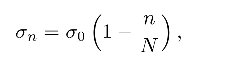
其中 σ0 是初始模糊强度，N 是课程总步数。因此，训练初期输入图像被强烈模糊，随着训练推进模糊逐渐被去除。
TA-VLA [17]：TA-VLA 在动作之外，把预测的力矩/接触信号作为辅助学习目标。推理时只执行机器人动作维度，辅助的力矩/接触预测仅用于在训练中塑造学到的表征。
图 10 展示了我们的迟滞阈值标注流程所产生的一个阶段标签示例。NEXT 估计的外部力矩在自由运动期间保持在零附近，在物理交互期间明显上升，从而可以把轨迹分为自由运动、接触前与接触三个阶段。接触前标签捕捉接触起始之前、需要精确对准的那段短区间；接触标签则捕捉持续交互的时段。这种传感级别的信号使得即使在没有专用力传感器的机械臂上，也能自动完成示教分割，为 FIRST 提供力引导重采样所需的阶段标注。
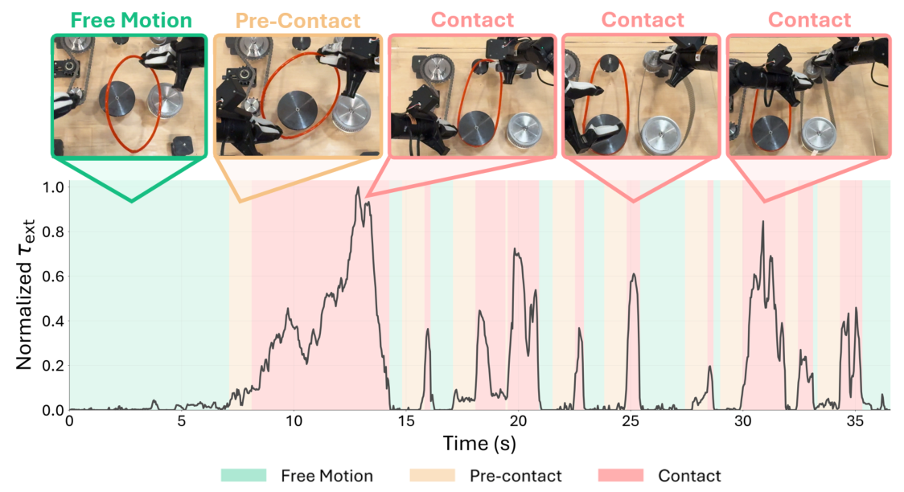
除第 7 节的流匹配策略外，我们也在 ACT 上应用 FIRST。如图 11 所示，我们观察到相似的趋势：对接触前与接触阶段上采样可以改善任务进度，优于各基线。
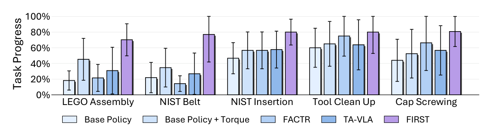
表 8 报告了 FIRST 在各任务上使用的重采样比例。所有比例写作 wF : wPC : wC，分别对应自由运动、接触前与接触样本的采样权重。对多数任务，FIRST 使用 1 : 5 : 1，即接触前样本的采样率是自由运动与接触样本的 5 倍。对瓶盖拧紧，FIRST 使用 1 : 3 : 3，同时上采样接触前与接触样本，因为持续接触是成功执行的核心。这些比例依据各任务的任务进度进行选取。
表 8：FIRST 在各任务上使用的最佳重采样比例。比例按 wF : wPC : wC 报告，对应自由运动、接触前与接触的采样权重。
| 任务 | 最佳重采样比例 |
|---|---|
| LEGO 装配 | 1 : 5 : 1 |
| NIST 皮带装配 | 1 : 5 : 1 |
| NIST 插入 | 1 : 5 : 1 |
| 工具清理 | 1 : 5 : 1 |
| 瓶盖拧紧 | 1 : 3 : 3 |
图 12 消融了上采样幅度对任务进度的影响。我们把幅度 m 定义为分配给被上采样阶段的采样权重相对于自由运动的倍数。对接触前上采样，阶段权重为 wF : wPC : wC = 1 : m : 1；对接触前 + 接触上采样，阶段权重为 wF : wPC : wC = 1 : m : m。我们在 NIST 皮带装配、NIST 插入与工具清理三个任务上用 ACT 运行该消融；受时间与算力限制，流匹配的消融只在工具清理任务上额外运行。跨任务来看，适度的上采样可以改善任务进度，性能一般在 m = 5 附近达到峰值；更大的取值会导致饱和或下降，说明过于激进的上采样会使训练分布过度偏向与接触相关的片段，降低对完整任务轨迹的覆盖。
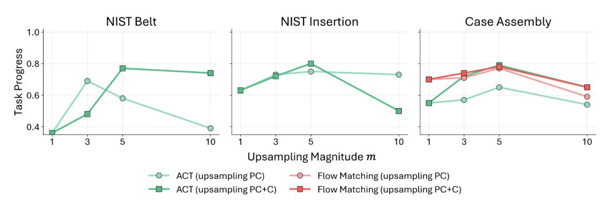
虽然第 7 节在以外力关节力矩为条件的策略上评估 FIRST，但 FIRST 也可以在不把力作为策略输入的情况下使用。这种设置下，NEXT 只在离线阶段用于把示教分割为自由运动、接触前与接触三个阶段。随后 FIRST 用这些阶段标签重采样训练数据，提高每个 minibatch 中接触前与接触样本的频率。重要的是，策略本身只接收标准的视觉与本体感觉观测，不包含预测的外部关节力矩。
表 9 突出了两个趋势。第一，在不含外部关节力矩的各列内部比较时，基于阶段的上采样优于标准行为克隆。对 ACT 与流匹配，使用 PC 或 PC+C 上采样通常比不上采样带来更高的任务成功率，说明即使力估计只在训练时用于数据重采样，由 NEXT 导出的阶段标签也是有用的。这表明 FIRST 可以通过把训练分布重塑到对准与接触敏感修正最关键的任务关键片段，来改进标准行为克隆。
第二，横向比较带与不带外部关节力矩训练的策略，以力为条件的策略成功率始终更高。这说明仅靠基于阶段的上采样虽已带来明显收益，但把预测的外部关节力矩直接送入策略可提供额外的状态信息，进一步改善富接触操作。总体而言，当两个组件一起使用时性能最佳：NEXT 提供外部关节力矩作为策略输入，而 FIRST 用由 NEXT 导出的阶段标签在训练中对最相关的接触前与接触阶段上采样。
表 9：基于阶段的上采样对带/不带外部关节力矩训练的策略的影响。结果为任务成功率。
| 策略 | 上采样策略 | 不含 τext | 含 τext | ||
|---|---|---|---|---|---|
| 皮带装配 | 工具清理 | 皮带装配 | 工具清理 | ||
| ACT | 无 | 0.220 | 0.600 | 0.347 | 0.650 |
| PC | 0.360 | 0.600 | 0.687 | 0.650 | |
| PC + C | 0.283 | 0.763 | 0.770 | 0.788 | |
| 流匹配 | 无 | 0.150 | 0.463 | 0.431 | 0.525 |
| PC | 0.213 | 0.575 | 0.767 | 0.805 | |
| PC + C | 0.241 | 0.525 | 0.649 | 0.775 | |
我们进一步考察：原始关节电流是否足以支撑接触感知的策略学习，还是说学到的外部关节力矩估计能提供更有用的表征。TA-VLA [17] 等此前的工作把低成本机械臂易于获取的关节电流测量直接作为与力相关的输入用于模仿学习。然而，关节电流只是物理交互的间接度量：它既包含自由空间运动所需的执行器出力，也包含外部接触的贡献，还混有硬件与控制相关的效应。因此策略必须隐式地把接触诱发的力矩与自由空间动力学解耦。
相比之下，NEXT 通过从实测电机力矩中减去学到的自由空间力矩预测，显式地估计外部关节力矩。这一区别很重要，因为仅从电流估计出干净的外部力矩信号通常需要时间上下文。如附录 A.2 中 NEXT 自由空间逆动力学的消融所示，更长的本体感觉历史会改善力矩估计，说明仅靠瞬时电流与状态观测不足以可靠地把自由空间驱动与接触分离开。而标准的行为克隆策略通常只接收当前观测，而不是像 NEXT 那样 50 步的长历史。虽然可以把这样的历史直接喂给策略，但这会加重策略的负担：它必须同时推断动力学、定位接触并求解视觉运动任务。实践中，长的本体感觉历史还可能促使策略过拟合到与轨迹相关的运动模式，而不是恰当地利用视觉来应对场景变化。NEXT 通过在专门的力量估计模块中使用历史、同时给策略一个紧凑且与接触相关的外部力矩信号，避开了这一问题。
我们在两个对接触敏感的任务——NIST 插入与瓶盖拧紧——上比较以原始关节电流为条件的策略与以学到的外部关节力矩为条件的策略。两个任务都需要力线索才能成功：NIST 插入依赖在插入过程中检测对准与接触，瓶盖拧紧则需判断瓶盖何时已完全拧紧。如表 10 所示，以关节电流为条件相比基础 ACT 策略改善了 NIST 插入，但未改善瓶盖拧紧；相比之下，以学到的外部关节力矩为条件在两个任务上都取得最佳性能。定性上我们观察到，以原始关节电流为条件的策略常常在瓶盖已拧紧后继续旋转，导致过度拧紧失败；而以学到的外部力矩为条件的策略能更好地检测已拧紧的接触状态，并适时终止拧紧动作。
图 13 的注意力分析进一步支持这一观察。为可视化策略在 rollout 中如何使用与力相关的信息，我们计算第一个解码器层中从动作 token 到观测 token 的平均交叉注意力。解码器同时关注视觉 token 与力相关 token，但图 13 只画出分配给力相关 token 的注意力质量：对以电流为条件的策略是原始关节电流 token，对我们的策略是学到的外部力矩 token。因此该可视化度量的是策略在预测动作时对力输入的关注强度。
在拧瓶盖操作中，以学到的外部力矩为条件的策略在关键接触事件附近（尤其是瓶盖被拧紧、拧紧动作应当停止时）注意力明显升高。相比之下，以原始关节电流为条件的策略对其电流 token 的注意力更弱，与事件的对齐也更差。虽然注意力只是一种诊断手段，本身并不能证明因果性，但这一模式说明：对力敏感的操作而言，学到的外部关节力矩比原始关节电流提供了更干净、也更与任务相关的接触表征。
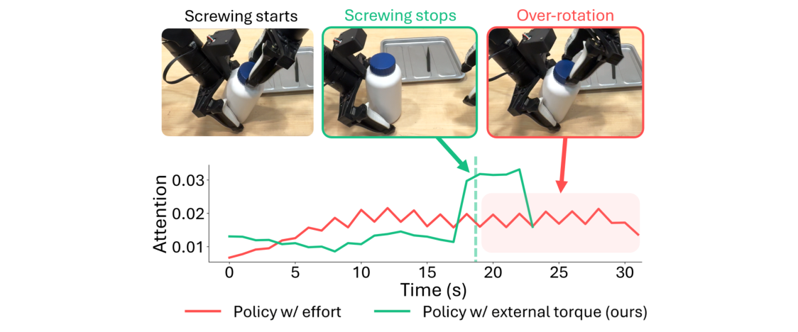
表 10：以原始关节电流为条件与以学到的外部关节力矩为条件时的策略性能。学到的外部关节力矩在两个接触敏感任务上都给出最佳性能。数值越高越好，粗体表示各任务内的最佳结果。
| 方法 | NIST 插入 ↑ | 瓶盖拧紧 ↑ |
|---|---|---|
| ACT | 0.220 | 0.440 |
| ACT + 关节电流 | 0.431 | 0.440 |
| ACT + τext | 0.567 | 0.525 |
我们进一步把 FIRST 与加权回归基线比较：后者依据每个样本属于自由运动、接触前还是接触阶段来对损失重新加权。两种方法都旨在强调与接触相关的数据，但方式不同：加权回归修改优化目标，而 FIRST 通过提高每个 batch 中有信息样本的出现频率来改变训练分布。
如表 11 所示，加权回归要么使性能下降，要么相对不上采样基线只有有限改善；相比之下，加权采样在 LEGO 装配上稳定地改善了性能。我们在其它富接触任务上也观察到类似的定性趋势。这说明直接提高稀疏的接触相关样本的损失贡献可能使优化不稳定，导致策略过拟合到高权重片段，或忽略更广的轨迹上下文。相反，按 batch 上采样在保留原有回归目标的同时，让策略更频繁地接触到关键的接触前与接触转换，从而带来更稳定的策略学习。
表 11：在 LEGO 装配任务（ACT）上比较各阶段强调机制。
| 阶段强调机制 | 被强调的阶段 | 任务进度 |
|---|---|---|
| 无 | – | 0.453 |
| 加权回归 | PC | 0.345 |
| PC + C | 0.478 | |
| FIRST（本文） | PC | 0.573 |
| PC + C | 0.501 |